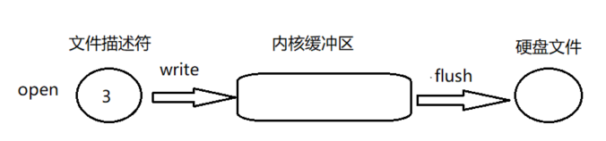
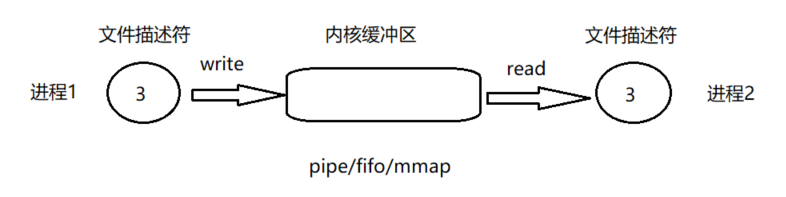
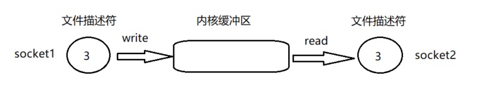

python_io_原理
内核缓冲区:流
流是open,socket,pipe等操作的内核对象,内核缓冲区就是这样的流
read:从流中读数据
write:向流中写入数据
假设有一个管道,进程A为管道的写入方,B为管道的读出方
1.内核缓冲区空
B作为读出方,阻塞
2.内核缓冲区非空
当A写入数据,内核缓冲区给B发信号,唤醒B,B就可以读了
3.内核缓冲区满
假设B未开启,A一直往内核缓冲区写,写满后A.内核缓冲区发信号给A,A阻塞
B读数据,内核缓冲区变为非空状态,内核缓冲区向A发送信号,A继续写
缓冲类型
- 全缓冲
缓冲区满时才会嗲用时间的文件IO(除了终端设备的文件流,其他基本都是全缓冲) - 行缓冲
遇到换行符\n才会调用文件IO.(终端设备就是行缓冲,如标准输入和标准输出,但是如果标准输入和输出重定向到某个文件时,就是全缓冲) - 无缓冲
直接调用文件IO(标准错误就是无缓冲)
open
1.open函数返回文件描述符,
2.write写入缓冲区
3.flush将缓冲区内容写入硬盘文件
4.当内核缓冲区满后,自动调用flush,写入硬盘文件

pipe/fifo/mmap
1.进程1使用pipe/fifo/mmap创建描述符,写入(如果写满会阻塞)
2.进程2使用相同的方法创建描述符,读取(如果空会堵塞)
3.区别于open,flush相当于进程2的read,因为写入磁盘是被动的

socket
1.socket1使用pipe/fifo/mmap创建描述符,写入(如果写满会阻塞)
2.socket2使用相同的方法创建描述符,读取(如果空会堵塞)

多文件描述符操作
忙轮询
将所有的流从头到尾询问一遍,如果有数据,就可以处理,但是如果都没数据就会浪费cpu
无差别轮询 select/poll
1.没有I/O产生,程序阻塞在select/poll处,有一个或多个I/O时间,从阻塞中醒来,轮询一遍所有的流
2.使用select我们有O(n)无差别轮询复杂度,当监听的流变多时,效率差
3.select最大文件描述符1024,poll没有最大限制
回调 epoll
1.没有最大文件描述限制
2.不是轮询方式,有活跃可用的文件描述符调用callback函数,跟踪连接数无关,复杂度O(1)
API
Python IO实现raw层,Buffer层,Text层,直接操作Text层,open打开返回流对象,有一个buffer属性,既是Buffer层
| ABC | Inherits | Stub Methods | Mixin Methods and Properties |
|---|---|---|---|
| IOBase | fileno, seek, and truncate | close, closed, enter, exit, flush, isatty, iter, next, readable, readline, readlines, seekable, tell, writable, and writelines | |
| RawIOBase | IOBas | readinto and write | Inherited IOBase methods, read, and readall |
| BufferedIOBase | IOBase | detach, read, read1, and write | Inherited IOBase methods, readinto, and readinto1 |
| TextIOBase | IOBase | detach, read, readline, and write | Inherited IOBase methods, encoding, errors, and newlines |
class io.IOBase
| 方法 | 描述 |
|---|---|
| close() | 关闭流,closed来判断是否关闭.此方法先调用flush |
| fileno() | 文件描述符,整数 |
| flush() | 刷新文件缓冲区 |
| isatty() | 流是否与tty设备交互,返回True |
| readable() | 可写,返回True |
| readline(size=-1) | 读取一行 |
| readlines(hint=-1) | 读取所有行,现在可以使用for line in file,而不用调用file.readlines() |
| seekable() | 如果为Falseseek(), tell(),truncate()都不可使用 |
| truncate(size=None) | 重新设定流的大小 |
| writable() | 可写返回True |
| writelines(lines) | 多行写入 |
| tell() | 当前位置 |
| seek(offset, whence=SEEK_SET) | SEEK_SET文件开头0;SEEK_CUR1当前位置;文件结束SEEK_END2 |
class io.RawIOBase
| 方法 | 描述 |
|---|---|
| read(size=-1) | 读字节 |
| readall() | 读所有字节 |
| readinto(b) | 读字节写入到bytearray |
| write(b) | readinto(b)的反向操作 |
class io.BufferedIOBase
| 方法 | 描述 |
|---|---|
| raw | 返回 RawIOBase |
| detach() | 返回原始流 |
| close() | 关闭流,closed来判断是否关闭.此方法先调用flush |
| fileno() | 文件描述符,整数 |
| flush() | 刷新文件缓冲区 |
| isatty() | 流是否与tty设备交互,返回True |
| readable() | 可写,返回True |
| readline(size=-1) | 读取一行 |
| readlines(hint=-1) | 读取所有行,现在可以使用for line in file,而不用调用file.readlines() |
| seekable() | 如果为Falseseek(), tell(),truncate()都不可使用 |
| truncate(size=None) | 重新设定流的大小 |
| writable() | 可写返回True |
| writelines(lines) | 多行写入 |
| tell() | 当前位置,每次读取,位置都会后移 |
| seek(offset, whence=SEEK_SET) | SEEK_SET文件开头0;SEEK_CUR1当前位置;文件结束SEEK_END2 |
Text I/O
| 方法 | 描述 |
|---|---|
| encoding | 编码 |
| errors | |
| newlines | 换行符 |
| buffer | |
| detach() | |
| read(size=-1) | (str)读取所有 |
| readline(size=-1) | (str)读取一行 |
| readlines(hint=-1) | (list)读取所有行,现在可以使用for line in file,而不用调用file.readlines() |
| write(s) | |
| seek(offset, whence=SEEK_SET) | |
| tell() |
参考:
https://docs.python.org/3/library/functions.html#open
https://www.cnblogs.com/maociping/p/5132583.html
https://www.cnblogs.com/gregoryli/p/7899010.html